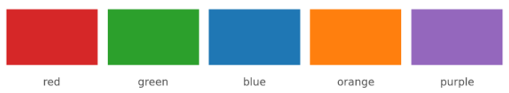
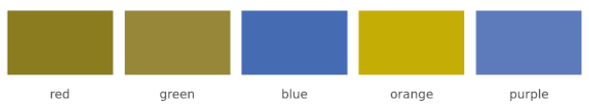
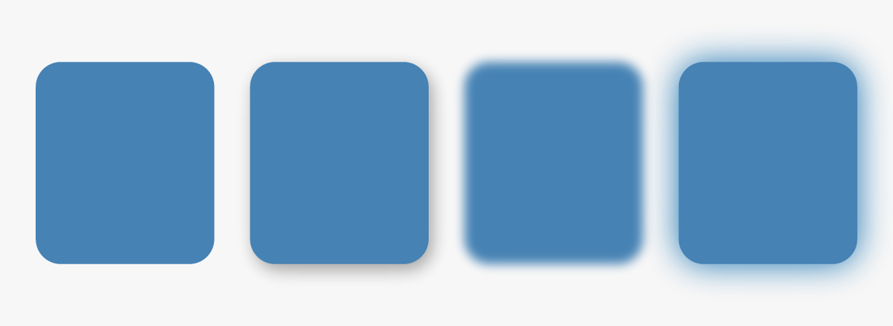

Render quality: accessibility, crisp edges, group effects
Source:vignettes/render-quality.Rmd
render-quality.RmdThree things that decide whether a figure reads correctly rather than merely being correct: whether its colours survive a reader’s vision, whether its thin lines survive the pixel grid, and whether it can carry the depth cues designers reach for.
Colour-vision simulation
Roughly one man in twelve has some form of colour-vision deficiency,
and the red/green pair that most default palettes open with is exactly
the one that fails. cvd = re-renders a scene as such a
reader would see it — on render(), scene_png()
and scene_raster().
pal <- c(red = "#D62728", green = "#2CA02C", blue = "#1F77B4",
orange = "#FF7F0E", purple = "#9467BD")
swatches <- local({
s <- vl_scene(6, 1.1, dpi = 96, bg = "white")
n <- length(pal)
for (i in seq_len(n)) {
s <- draw(s, rect_grob(x = (i - 0.5) / n, width = 0.9 / n, height = 0.6, y = 0.6,
gp = vl_gpar(fill = pal[[i]], col = NA)))
s <- draw(s, text_grob(names(pal)[i], x = (i - 0.5) / n, y = 0.12,
gp = vl_gpar(fontsize = 9, col = "grey30")))
}
s
})
# `scene_raster()` gives pixels back, so a simulation can be shown inline.
show_cvd <- function(scene, kind) {
a <- scene_raster(scene, cvd = kind)
m <- matrix(grDevices::rgb(a[1, , ], a[2, , ], a[3, , ], maxColorValue = 255),
nrow = dim(a)[2])
grid::grid.newpage()
grid::grid.raster(as.raster(t(m)), interpolate = FALSE)
}Normal vision:
show_cvd(swatches, "none")
Deuteranopia, the common form:
show_cvd(swatches, "deuteranopia")
Red and green have become the same colour. If those two encoded different series, that plot no longer works.
The useful part is not the picture but the number. Because
scene_raster() returns pixels, you can measure
separability rather than eyeball it:
sep <- function(a, b, kind) {
r <- scene_raster(swatches, cvd = kind)
at <- function(i) as.integer(r[1:3, round((i - 0.5) / length(pal) * dim(r)[2]), 60])
sum(abs(at(a) - at(b)))
}
vapply(c("none", "protanopia", "deuteranopia", "tritanopia", "achromatopsia"),
function(k) sep(1, 2, k), 0)
#> none protanopia deuteranopia tritanopia achromatopsia
#> 295 136 48 485 84achromatopsia doubles as a greyscale-printing check.
And when the simulation says your palette fails, the fix is
texture. Encoding a category by hatch angle as well as hue
survives any of these simulations, and greyscale printing too — see
vl_hatch() in vignette("scene-and-paint").
The simulation uses the Machado et al. (2009) matrices applied in
linear light — the common shortcut of applying them in
sRGB shifts lightness as well as hue. It is a raster post-pass: vector
formats have no pixels to transform, and render() warns
rather than quietly writing an unsimulated file.
Crisp gridlines
A one-pixel horizontal rule whose centre lands at a fractional coordinate covers half of each of two pixel rows, and antialiasing renders it as two grey rows instead of one black one. Multiply by every gridline and this is why plots often look slightly muddy on screen.
crisp = TRUE snaps axis-parallel strokes onto the pixel
grid:
rule <- function(...) {
vl_scene(4, 0.5, dpi = 96, bg = "white") |>
draw(segments_grob(0.05, 0.5013, 0.95, 0.5013,
gp = vl_gpar(col = "black", lwd = 1, ...)))
}
# The darkest pixel in the column tells you whether the line is solid.
c(default = min(scene_raster(rule())[1, 100, ]),
crisp = min(scene_raster(rule(crisp = TRUE))[1, 100, ]))
#> default crisp
#> 112 0A non-zero minimum means the darkest pixel in that column is still grey: the stroke is spread across two rows. Zero means it landed on one row, solid. (The exact default value depends on where the fractional coordinate falls, which is the problem.)
Diagonals are left alone — there is no grid to snap them to — and it only affects raster output, since a vector format has no pixel grid.
Set it once on a viewport and every rule inside inherits it:
push(vl_viewport(gp = vl_gpar(crisp = TRUE)))The companion is antialias = FALSE, for the cases where
soft edges are wrong rather than right: pixel art, QR codes, and heatmap
cells that must tile without a seam.
tri <- function(aa) {
vl_scene(1, 1, dpi = 96, bg = "white") |>
draw(polygon_grob(c(.1, .9, .5), c(.1, .1, .9),
gp = vl_gpar(fill = "black", col = NA, antialias = aa)))
}
c(antialiased = length(unique(as.vector(scene_raster(tri(TRUE))[1, , ]))),
aliased = length(unique(as.vector(scene_raster(tri(FALSE))[1, , ]))))
#> antialiased aliased
#> 6 2Two distinct values means pure black and pure white — no intermediate shades.
Group effects
blur and shadow are group
effects: they act on a viewport’s contents composited as one layer. That
is the important distinction. Overlapping shapes inside the viewport
cast a single shadow together, rather than each casting one onto the
others.
s <- vl_scene(6, 2, dpi = 96, bg = "grey97")
for (spec in list(
list(x = 0.14, args = list()),
list(x = 0.38, args = list(shadow = vl_shadow(dx = 2, dy = 3, blur = 4))),
list(x = 0.62, args = list(blur = 2.5)),
list(x = 0.86, args = list(shadow = vl_shadow(dx = 0, dy = 0, blur = 8, col = "#1F77B4")))
)) {
s <- push(s, do.call(vl_viewport, c(list(x = spec$x, width = 0.2, height = 0.62), spec$args)))
s <- draw(s, roundrect_grob(r = 0.14, gp = vl_gpar(fill = "steelblue", col = NA)))
s <- pop(s)
}
display(s)
Left to right: plain, drop shadow, blur, and a glow — which is simply a shadow with no offset, so it needs no separate function.
Per backend: the raster path convolves (three box passes, the
standard Gaussian approximation); SVG emits native
feGaussianBlur / feDropShadow, so the group
stays vector and the viewer does the work; PDF has no filter model at
all, and says so through vellum’s degradation warning rather than
silently rasterising your vector output.
render(s, "cards.pdf")
#> Warning: a group blur/shadow (PDF has no filter model; the group is drawn unfiltered)That warning is the design principle at work: where a backend cannot honour something, it fails visibly.
Where to go next
-
vignette("inspecting-scenes"):vl_lint()will flag low-contrast text and illegible labels for you, which pairs directly with the simulation above. -
vignette("typography"): halos and OpenType features.